Principes fondamentaux de machine learning
Ce chapitre va permettre d’avoir les bases nécessaires pour comprendre ce qu’est le machine learning, ses limites et ses applications.
Introduction au machine learning
L’apprentissage automatique (machine learning) est une branche de l’intelligence artificielle qui permet à un programme d’automatiser l’apprentissage à partir d’exemples, sans être explicitement programmé pour accomplir une tâche.
Les principaux algorithmes de machine learning peuvent se diviser en 2 catégories :
-
Apprentissage supervisé : le modèle est entraîné avec des données étiquetées et il doit apprendre à reconnaître les patrons pour prédire les résultats futurs. Quelques exemples :
-
Réseaux de neurones : est comme une équipe de détectives qui examinent ensemble une image pour décider si elle représente un chien, un chat ou un arbre, en se basant sur les caractéristiques qu’ils ont appris à reconnaître.
-
Régression linéaire : vise à prédire une valeur continue (par exemple, la température) en fonction de variables explicites.
-
Les arbres de décision : un algorithme qui utilise des règles pour prendre des décisions en fonction de caractéristiques des données.
-
Apprentissage non supervisé : le modèle est entraîné avec des données non étiquetées et il doit apprendre à identifier les groupes ou les tendances dans les données. Quelques exemples :
-
L’agrégation (cluster) : un algorithme qui vise à grouper les données en fonction de leurs similarités.
-
Autoencodeurs : réseau de neurones qui permettent la compression (encodeur) et décompression (décodeur) de données
-
Analyse en composantes principales (PCA) : permet de réduire une grande base de données de caractéristiques par exemple de vins (degré d’alcool, la couleur, l’acidité, etc.) à seulement deux ou trois caractéristiques les plus importantes qui expliquent le plus de variabilité dans les vins, pour faciliter leur comparaison et leur classification.
La figure 6.1 permet d’avoir un aperçu des phases de création d’un modèle de machine learning à partir d’un algorithme supervisé.

Un détail important pour la compréhension de la Figure 6.1 est la différence entre modèle et algorithme :
-
Un modèle est une implémentation spécifique d’un algorithme, adaptée à un jeu de données ou un problème particulier.
-
Un algorithme est un ensemble d’instructions ou une procédure utilisée pour entraîner un modèle.
Une bonne manière de faire la différence est de voir l’algorithme comme la recette de cuisine et le modèle comme le gâteau. La recette (algorithme) fournit les instructions pour combiner les ingrédients, mais le gâteau (modèle) est le résultat physique de la mise en œuvre de la recette.
La Figure 6.1 va servir de fil conducteur pour expliquer les principales phases :
-
Tâche : Le machine learning n’a pas de sens s’il n’y avait pas un problème à résoudre. Par exemple classer des images de chat et chien
-
Choix algorithme : une fois la tâche déterminée, il faut choisir l’algorithme adéquat pour résoudre le problème. Par exemple choisir un algorithme de classification d’image
-
Sélection des données adaptées à l’algorithme : la création du modèle nécessite des données appropriées à l’algorithme utilisé. Par exemple, des images de chats ou de chiens pour un algorithme de classification d’images.
-
Ces données sont des exemples qui serviront à entraîner le modèle à effectuer des tâches spécifiques. Si les données ne sont pas étiquetées (également appelées annotées), il sera nécessaire de le faire. Dans le cas présent, il faudra rechercher des données déjà annotées de chats et de chiens, ou bien procéder à cette annotation soi-même. Ces données annotées constituent un ensemble de données (dataset ou jeu de données).
-
Ces données doivent être divisée en plusieurs parties :
-
Données d’entraînement : elles serviront à l’entraînement du modèle et représentent environ 60% du dataset.
-
Données de validation : lors de l’entraînement ces données servent à valider que le modèle apprend correctement et qu’il ne mémorise pas les données d’entraînement. Les données de validation représentent environ 20% du dataset
-
Données de test : ces données ne sont pas utilisées lors de l’entraînement et servent à vérifier les performances finales du modèle sur des données qu’il n’a jamais vues auparavant. Les données de test représentent environ 20% du dataset.
-
-
Entraînement du modèle : on va appliquer l’algorithme sur les données
d’entraînement pour développer le modèle spécifique pour résoudre le problème de la première phase. Dans l’exemple, le modèle va apprendre les différentes caractéristiques d’un chien (museau, poil, etc.) et d’un chat. -
Validation des performances du modèle : le modèle est utilisé pour vérifier ses performances sur les données de validation. S’il arrive à bien classifier les chats ou les chiens, l’entraînement peut se terminer. Dans le cas où il n’arrive pas encore à bien les classifier, l’entraînement doit continuer.
-
Test des performances du modèle : l’objectif de cette phase est d’évaluer les performances du modèle sur des données qu’il n’a jamais vues lors de l’entraînement. Les données utilisées sont les données de test. Si le modèle parvient à bien classifier les images de chats et de chiens (par exemple dans 85% des cas), le modèle est considéré comme “OK” et peut passer en production. Cependant, si les performances ne sont pas satisfaisantes (cas “KO”), il faut vérifier que les données sont adéquates, bien annotées et qu’il n’y a pas de problème de répartition entre les différentes classes. Une deuxième cause de mauvais résultats peut être le choix de variables (hyperparamètres) inadéquates pour l’entraînement.
-
Mise en production : cette phase implique que le modèle fonctionne correctement et il peut maintenant réaliser la tâche pour laquelle il a été créé sur des données qu’il n’a jamais vues. Par exemple, classifier des images de chats et de chiens. La mise en production est complexe et souvent réalisée par des professionnels du DevOps qui ont d’excellentes connaissances des systèmes informatiques (“Ops”) ainsi que du développement informatique (“Dev”). Dans notre exemple, un site web pourrait accueillir l’interface dans laquelle l’utilisateur ou l’utilisatrice va soumettre une photo et le modèle va classifier l’image en chat ou en chien.
Le développement de modèles de machine learning supervisé est assez complexe et il se peut que cela ne fonctionne pas du premier coup (cas “KO” sur Figure 6.1). Les causes les plus habituelles sont les suivantes :
-
Pas assez de données pour apprendre. Possible solution :
-
Collecter plus de données
-
Équilibre des classes entre les données. Est-ce qu’une classe représente la majorité des données ? Est-ce que les chiens représentent par exemple plus de 80% du dataset ? Si les données ne sont pas équilibrées, le modèle ne va pas bien apprendre les spécificités de chaque classe. Plusieurs solutions :
-
Collecter plus de données de la ou les classe(s) moins représentée(s)
-
S’il y a suffisamment de données, c’est possible d’enlever une partie des donnes jusqu’à ce que les classes soient équilibrées
-
Mauvais choix de modèle : c’est possible qu’un modèle soit trop complexe (réseau de neurones avec des milliards de paramètres) ou trop simple (régression linéaire). Possibles solutions :
-
Vérifier que l’algorithme choisi est adapté à la tâche qu’il doit réaliser, il ne doit pas être trop simple ni trop complexe
-
Si l’algorithme est complexe, c’est possible de le faire fonctionner avec plus de données mais ce n’est pas intelligent ni efficient d’un point de vue énergétique. Un gros modèle (beaucoup de paramètres) aura un entraînement plus long et va utiliser plus d’énergie lors de son utilisation
La réponse dans beaucoup de cas semble être d’acquérir plus de données. Cette démarche exige tout de même une certaine réflexion et dans certains cas ce n’est pas la meilleure :
-
Coût de l’acquisition : l’acquisition de données supplémentaires peut être très coûteuse. Avoir plus de données va probablement impliquer la labellisation de celles-ci, ce qui peut engendrer des coûts non négligeables
-
Rareté de la donnée : dans le domaine médical c’est difficile d’avoir plus de données sur des maladies rares par exemple
-
Contraintes légales : des lois peuvent ne pas permettre l’accès à certaines données privées
-
Qualité des données : la qualité de données collectées va avoir un impact sur le modèle, avoir des données de bonne qualité doit être une priorité par rapport à la quantité
Applications
Le machine learning a des applications très variées et il est utilisé dans de nombreux domaines tels que :
-
Vision par ordinateur (“computer vision”)
-
Reconnaissance de caractères dans une image
-
Générer automatiquement une description d’une image
-
Conduite autonome d’un véhicule
-
Aide au diagnostic de maladies dans le cadre de l’imagerie médicale
-
Traitement automatique du langage (“natural language processing”)
-
Reconnaissance de voix automatique et transcription de ce qui est dit
-
Traduction automatique de texte
-
Classification de texte, par exemple classifier un courriel en “spam” ou un message dans un réseau social en “language inapproprié”
-
Modèles de language tel que GPT3.5 (ChatGPT) qui permettent de saisir des questions en texte et le modèle va générer une réponse dans le même format
-
Séries temporelles
-
Planification prédictive du nombre de travailleurs nécessaires pour une entreprise
-
Maintenance préventive de machines pour optimiser le nombre d’heures de fonctionnement
-
Prédiction de météo et d’événements extrêmes tel que ouragans ou tremblements de terre
-
Applications au domaine financier (ventes prévues d’une entreprise, aide à la décision dans les transactions boursières, etc.)
-
Prédiction des embouteillages et aide à la gestion du trafic routier
-
Aide à la gestion du réseau électrique en prédisant les pics de consommation
Neurones artificiels
Les réseaux de neurones sont très souvent utilisés en machine learning car ils permettent de résoudre des problèmes complexes et ils été une révolution dans le domaine.
Un réseau de neurones est un modèle mathématique inspiré de la structure et du fonctionnement du cerveau humain.
L’idée a été inspirée par le fonctionnement des neurones biologiques. C’est-à-dire que chaque neurone (voir Figure 6.2) reçoit des signaux d’entrée de ses dendrites et produit des signaux de sortie le long de son axone. L’axone se ramifie ensuite et se connecte via des synapses aux dendrites d’autres neurones, formant ainsi un réseau neuronal.
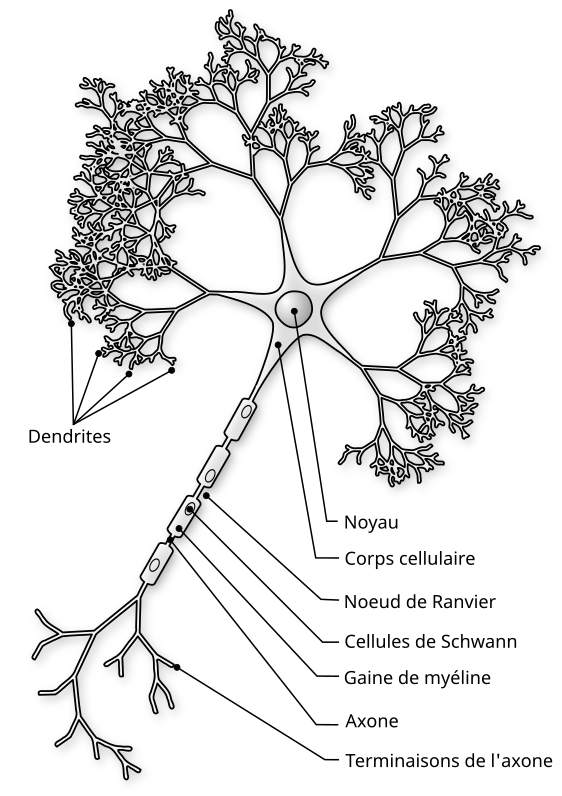
Le premier neurone artificiel [96] a été créée en 1943 par Warren Sturgis McCulloch et Walter Pitts. La Figure 6.3 permet de voir les similarités avec une neurone biologique. Le neurone de McCulloch-Pitts est une unité binaire avec un seuil d’activation qui reçoit une ou plusieurs entrées, effectue un calcul et produit une sortie.
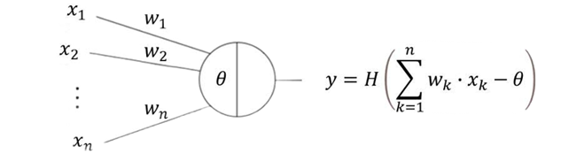
Le neurone est constitué des parties suivantes :
-
x1, x2, sont les entrées du neurone (signal), ce sont des signaux binaire qui prennent les valeurs de 0 ou 1
-
w1, w2 sont les poids (“weights”) qui vont donner de l’importance au signal. Ils prennent les valeurs -1 (réduire le signal) ou +1 (augmenter le signal)
-
θ est le seuil d’activation, c’est-à-dire la valeur minimum pour produire une sortie y
-
y est la valeur de sortie du neurone, c’est une valeur binaire
-
H est la formule d’activation
L’activation utilise la fonction de Heaviside :
(1)
L’utilité de ce neurone est remarquable car il permet de créer des opérateurs logiques.
(2)
Un exemple d’application de l’opérateur “ET” de l’Équation (2) permet de vérifier qu’il fonctionne correctement :
(3)
Ce modèle a certaines limitations :
-
Ses poids (w) et seuil (θ) sont fixes
-
Sa sortie binaire ne permet pas de nuance, elle indique juste “vrai” (1) ou “faux” (0)
-
Pas d’actualisations des poids selon les besoins
-
Une seule couche ne permet pas de réaliser des calculs complexes
En 1958, Frank Rosenblatt [98] publie un article ou il propose le perceptron, un nouveau type de neurone artificiel.
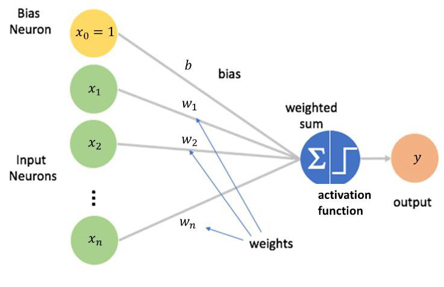
Celui-ci se distingue du neurone de McCulloch-Pitts car elle permet d’utiliser des nombres réels pour les entrées, poids et biais. L’équation (4) [98] du perceptron est la suivante:
(4)
Dans l’équation (4), H représente la fonction d’activation de Heaviside, wk les poids, xk les entrées, b le biais, et n le nombre d’entrées.
L’évolution la plus remarquable par rapport au neurone de McCulloch-Pitts, est que le perceptron peut “apprendre” des données et actualiser les poids et biais.
On dispose d’un ensemble de données étiquetées {(x(i), y(i))|i = 1, ...N}, où x(i) sont des vecteurs n-dimensionnels. Pour la mise à jour des poids et du biais il faut suivre les étapes suivantes :
-
Initialiser le vecteur des poids x(i) et le biais b avec des valeurs nulles (ou des valeurs aléatoires proches de 0)
-
Itérer en mettant à jour le vecteur de poids w le biais b selon les règles suivantes :
(5)
Le taux d’apprentissage α (“learning rate”) est un paramètre de l’algorithme, cette valeur doit être positive. Une valeur de départ tel que α = 0.1 semble judicieuse pour démarrer.
L’actualisation du vecteur de poids et le biais a lieu seulement si la valeur prédite et celle connues sont différentes ŷ(i) = H(w ⋅ x(i) + b) ≠ y(i).
En résumé, les neurones artificielles sont des modèles mathématiques inspirés du cerveau humain. Le neurone de McCulloch-Pitts (1943) est une unité binaire avec un seuil d’activation, mais il présente des limitations. Le perceptron de Rosenblatt (1958) améliore ce modèle en utilisant des nombres réels et en permettant l’apprentissage et la mise à jour des poids et biais.
Réseau de neurones
La combinaison de plusieurs perceptrons va créer un réseau de neurones. Cela va créer un réseau de neurones d’une seule couche où les perceptrons sont tous connectés à l’entrée (Figure 6.5).
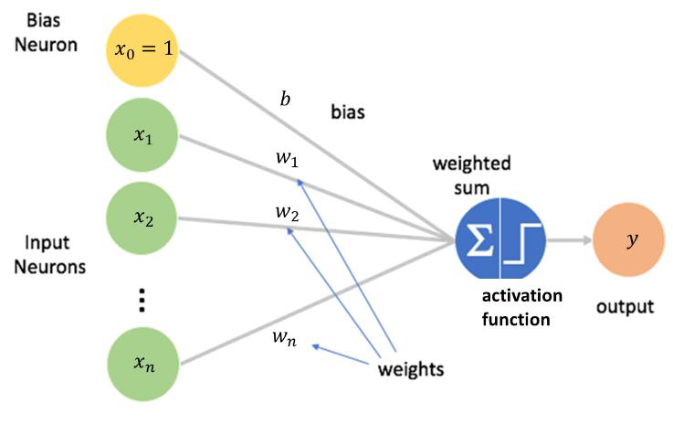
C’est aussi possible de connecter plusieurs couches de perceptron entre eux, tel qu’illustré dans la Figure 6.6.
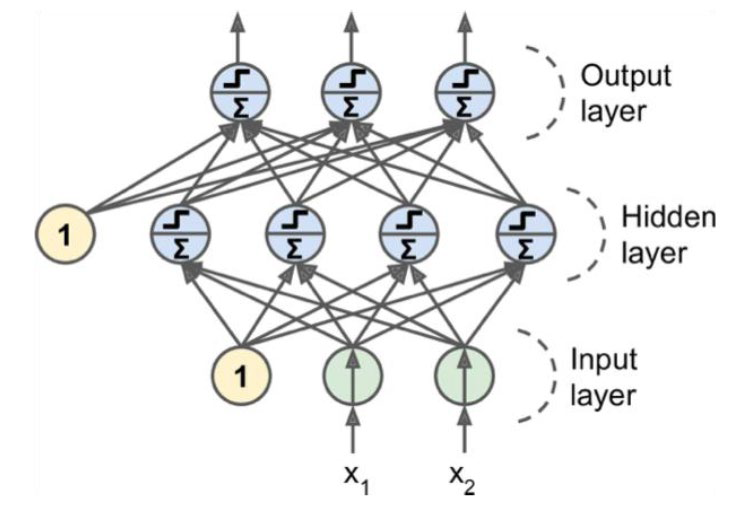
Pour améliorer les performances du perceptron, la fonction d’activation de Heaviside (Équation (1)) est remplacée par la fonction d’activation de sigmoid (Equation (6)).
(6)
Cette fonction (Figure 6.7) va permettre au perceptron de retourner des valeurs entre 0 et 1, ce qui va augmenter considérablement les capacités du perceptron.
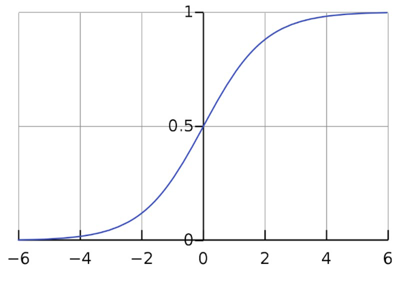
Le perceptron multicouche est suffisamment sophistiqué pour réaliser de la reconnaissance de caractères sur le dataset MNIST [99].
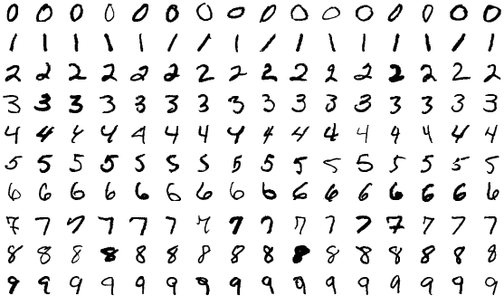
Ce dataset (Figure 6.8) consiste en 70’000 images de chiffres écrits à la main (60k entraînement et 10k test) labellisés. Chaque image a une taille de 28x28 pixels en noir et blanc.
Ces évolutions posent la fondation pour les réseaux de neurones modernes qui sont l’état de l’art dans le domaine.
Évaluation de la performance d’un modèle
L’évaluation des performances d’un modèle est primordiale pour savoir si le modèle fonctionne comme il devrait. Cela est réalisé sur la base de données déjà annotées.
Le Tableau 6.1 résume les principales métriques. L’exemple est la détection de pirates qui pourraient essayer de dévier un avion de sa trajectoire.
| Terme | Définition | Exemple | Formule |
|---|---|---|---|
| True Positive (TP) | La classe prédite spécifiquement recherchée (positive) est identique à la classe annotée. | Le modèle a détecté un pirate. C’est un pirate. | |
| True Negative (TN) | La classe prédite non souhaitée (négative) est identique à la classe annotée. | Le modèle a détecté qu’il ne s’agit pas d’un pirate. Ce n’est pas un pirate. | |
| False Positive (FP) | La classe prédite spécifiquement recherchée (positive) est différente à la classe annotée. | Le modèle a détecté un pirate. Ce n’est pas un pirate. La personne n’est pas contente d’être fouillée. | |
| False Negative (FN) | La classe prédite non souhaitée (négative) est différente à la classe annotée. | Le modèle a détecté qu’il ne s’agit pas d’un pirate. C’est un pirate. | |
| Accuracy (ACC) | L’accuracy mesure la proportion d’images correctement classées parmi toutes les images de l’ensemble de test. | \(\displaystyle\frac{TP + TN}{TP + TN + FP + FN}\) | |
| Precision (P) | La précision mesure la proportion de vrais positifs (TP) parmi toutes les prédictions positives faites par l’algorithme. | \(\displaystyle\frac{TP}{TP + FP}\) | |
| Recall (R) | Le recall mesure la proportion de vrais positifs parmi toutes les instances positives réelles. | \(\displaystyle\frac{TP}{TP + FN}\) | |
| F1-score | Le F1-score est la moyenne harmonique de la précision (P) et du recall (R). Il fournit une mesure équilibrée de ces deux éléments. | \(\displaystyle\frac{2 \cdot P \cdot R}{P + R}\) |
Tableau 6.1 — Résumé des principales métriques utilisées en machine learning pour évaluer la performance
La matrice de confusion est un outil qui permet d’évaluer les performances d’un modèle.
| Prédiction | ||||
| Positif | Négatif | Total | ||
| Réalité | Positif | TP | FN | FN + TP |
| Négatif | FP | TN | FP + TN | |
| Total | TP + FP | FN + TN | N | |
Le Tableau 6.3 illustre un exemple pratique de toutes les métriques pour la détection d’un chat (positif) sur une image.
| Prédiction | ||||
| Positif | Négatif | Total | ||
| Réalité | Positif | TP=5 | FN=3 | FN+TP=3+5=8 |
| Négatif | FP=2 | TN=17 | FP+TN=2+17=19 | |
| Total | TP+FP=5+2=7 | FN+TN=3+17=20 | N=7+20=8+19=27 | |
(7)
Dans ce cas on voit que l’accuracy est de 85%, le modèle classifie correctement (TP + TN) 85% de toutes les images (TP + TN + FP + FN).
Sa précision est de 71%, le modèle classifie correctement (TP) 71% des images de chat qu’il a détecté en tant que chat (TP + FP).
Son recall est de 63%, le modèle classifie correctement (TP) 63% des images parmi toutes les images de chat (FN + TP).
Le F1-score est de 67% ce qui indique un modèle qui n’est pas très performant. Les différentes métriques doivent être prise en compte car c’est possible qu’un modèle ait une bonne accuracy mais un recall mauvais. Le F1-score représente un bon indicateur de performance globale du modèle.
Ces métriques peuvent être appliquées à des modèles avec plusieurs classes, l’idée est que l’on compare la classe qui nous intéresse (positive) par rapport au reste qui devient la classe négative. Le Tableau 6.4 représente un exemple avec 3 classes.
| Prédiction | |||||
| Chat | Chien | Lapin | Total | ||
| Réalité | Chat | 5 | 3 | 0 | 8 |
| Chien | 2 | 3 | 1 | 6 | |
| Lapin | 0 | 2 | 11 | 13 | |
| Total | 7 | 8 | 12 | 27 | |
Si l’on souhaite connaître les métriques de la classe chat, on peut de manière intuitive prendre les données des chats et les considérer comme positives. Les autres classes seront quant à elles, considérées comme négatives.
| Prédiction | ||||
| Positif | Négatif | Total | ||
| Réalité | Positif | TP=5 | FN=3 | FN+TP=3+5=8 |
| Négatif | FP=2 | TN=17 | FP+TN=2+17=19 | |
| Total | TP+FP=5+2=7 | FN+TN=3+17=20 | N=7+20=8+19=27 | |
Dans le Tableau 6.5 on observe que la somme des colonnes chien et lapin correspond bien à la colonne négative. Ainsi les mêmes formules qu’avant peuvent être utilisées.
Données
Les données sont très importantes pour élaborer des modèles performants. Dans le contexte du machine learning, les données sont généralement stockées dans un dataset ou jeu de données contenant des exemples étiquetés. Ce chapitre va explorer les principaux types de données que l’on retrouve fréquemment en machine learning ainsi que dans le domaine de la géomatique.
Il y a une grande variété de données qui peuvent être utilisées en machine learning :
-
Texte
-
Images
-
Audio
-
Vidéo
-
Données qui évoluent en fonction du temps (séries temporelles) tel que la température, cotation en bourse, etc.
Le type de données qui sont en lien avec la géomatique et qui seront traités dans ce chapitre sont :
-
Images
-
Orthophotos
-
Nuage de points LiDAR
-
Données vectorielles
Images
Les images sont des données très utilisées dans la “computer vision” qui est une des disciplines du machine learning.
Un exemple de dataset d’images est le “CIFAR-10” [100].
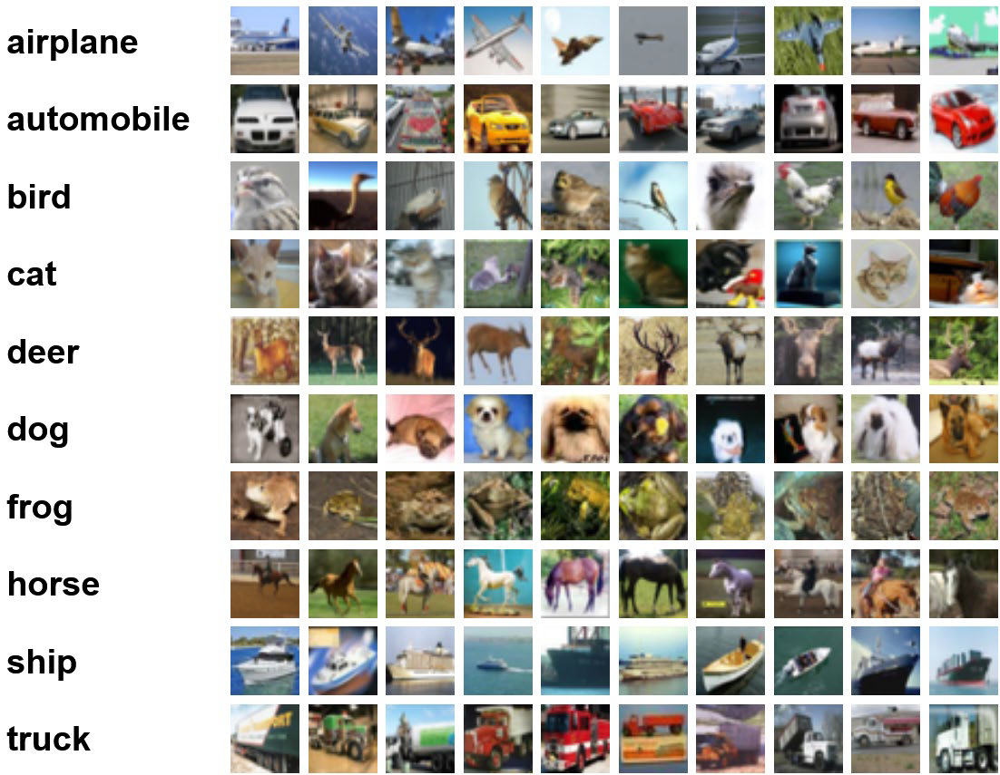
Ce dataset a les caractéristiques suivantes :
-
60000 images en couleur (partagées en 50000 d’entraînement et 10000 de test)
-
10 classes
-
6000 images par classe
-
Images de taille 32x32 pixels en RVB (rouge, vert, bleu)
Ce dataset est très utilisé pour apprendre à créer des réseaux de neurones simples, efficients qui arrivent à obtenir d’excellentes performances.
Orthophotos
En géomatique, une orthophoto est un type de photographie aérienne qui offre une représentation rectifiée d’une zone géographique.
Les orthophotos sont créées en utilisant des images satellitales ou aériennes de haute résolution, souvent acquises par des systèmes tels que les caméras embarquées sur des avions ou des drones. Pour obtenir une orthophoto de qualité, il est nécessaire de suivre un processus complexe comprenant plusieurs étapes :
-
Acquisition des images : Les images sont prises à partir d’un appareil photo aérien ou satellitaire, généralement à partir d’une altitude élevée.
-
Rectification géométrique : Les images sont rectifiées pour corriger les distorsions liées à la perspective et aux mouvements de l’appareil photo pendant la prise de vue.
-
Mosaïque des images : Les images sont assemblées (mises en mosaïque) pour former une image unique et continue, qui couvre la zone géographique souhaitée.
-
Correction de la topographie : La surface du terrain est corrigée pour prendre en compte les élévations et les dénivellations, ce qui permet d’obtenir une représentation tridimensionnelle exacte.
-
Traitement des données : Les images sont traitées pour éliminer les bruits, les artefacts et les imperfections, ce qui améliore la qualité de l’image finale.
Il existe 3 types différents d’orthophotos [102] :
-
Orthophoto dynamique
-
Orthomosaïque
-
“True orthophoto”
Orthophoto dynamique
Les orthophotos dynamiques sont générés de manière dynamique à partir d’images sources, en utilisant un modèle numérique de terrain comme référence.
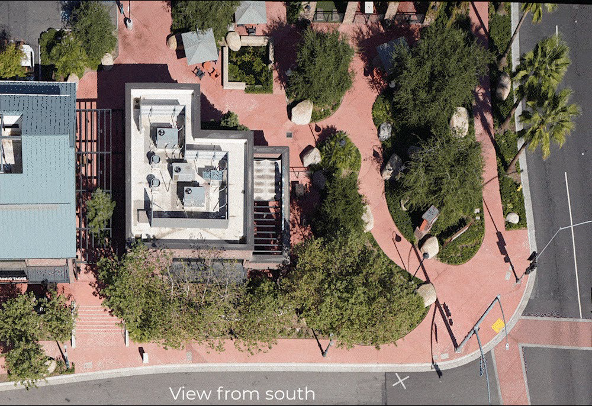
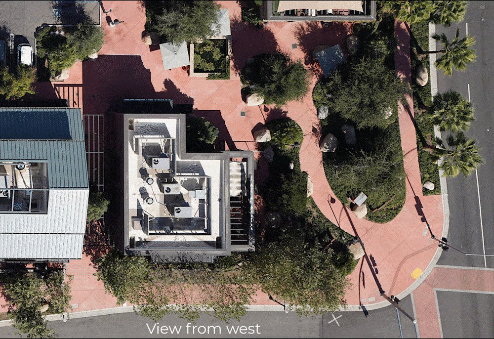
Les avantages sont :
-
Génération rapide des orthophotos
-
Permet de visualiser une zone avec plusieurs perspectives différentes
Le principal inconvénient est que les objets non-terrain (bâtiments par exemple), peuvent apparaître inclinés (voir Figures 6.10 et 6.11). Les caractéristiques aériennes peuvent sembler se déplacer lorsque l’image est déplacée en raison de la visualisation des objets depuis différentes directions.
Orthomosaïque
Les orthomosaïques sont créés en fusionnant plusieurs images en une seule image cohérente. La Figure 6.12 de la page suivante représente un exemple d’orthomosaïque.
Les principaux avantages des orthomosaïques sont :
-
Image plus compacte, ce qui permet un affichage plus rapide
-
Génération rapide, en particulier si un modèle numérique de terrain est disponible
-
Peuvent être créés à partir d’images avec moins de recouvrement, ce qui peut réduire les exigences de capture de données
Les principaux inconvénients des orthomosaïques sont :
-
Pas précis pour les objets hors sol qui peuvent sembler inclinés loin de la caméra.
-
Peuvent avoir des artefacts visuels causés par les angles de caméra.
-
Les lignes de séparation utilisées lors de la génération de l’image peuvent être visibles (voir Figure 6.13 de la page suivante)
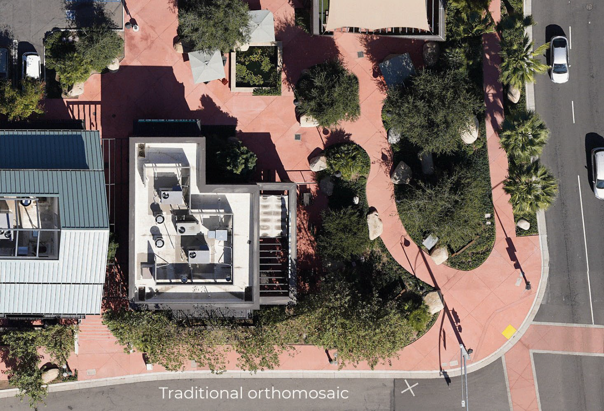
“True orthophoto”
Les true orthophotos sont créés en utilisant un modèle numérique de surface très détaillé pour générer une orthophoto de sortie précise pour tous les pixels (Figure 6.14).
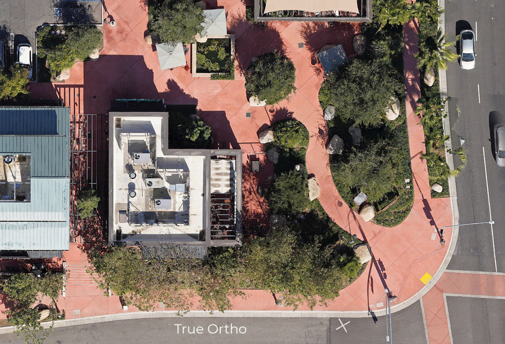
Les avantages des true orthophotos sont les suivants :
-
Fournissent des images cohérentes de haute qualité qui sont idéales pour la digitalisation de la localisation et de la taille des empreintes de bâtiment.
-
Peuvent être générés de manière entièrement automatique, sans nécessiter de lignes de soudure ou de lignes de rupture manuelles.
-
Peuvent éliminer automatiquement les objets en mouvement, les reflets ou les couleurs incohérentes.
-
Peuvent améliorer la radiométrie et la résolution en utilisant la redondance de plusieurs images.
-
Sont idéaux pour la détection de changement, car les images sont cohérentes d’une année à une autre.
Les principaux inconvénients des true orthophotos sont :
-
Plus coûteux en termes de calcul.
-
Nécessitent un recouvrement suffisant entre les images pour extraire un modèle numérique de surface détaillé.
Dans le cadre du machine learning, le type d’orthophoto la plus intéressante est la true orthophoto.
Le Tableau 6.6 ci-dessous synthétise les avantages et inconvénients de chacun des types d’orthophotos.
| Type d’orthophoto | Génération | Précision objets hors sol | Données | Espace de stockage | Complexité de traitement |
|---|---|---|---|---|---|
| Orthophoto dynamique | Généré en temps réel, moins précis pour les objets non-terrain. | + | + | + | + |
| Orthomosaïque | Créé en fusionnant plusieurs images ortho | ++ | ++ | ++ | ++ |
| True orthophoto | Créé en utilisant un modèle numérique de surface très détaillé | +++ | +++ | +++ | +++ |
Tableau 6.6 — Comparatif des 3 types d’orthophotos
Fournisseurs d’orthophotos
Au niveau mondial, il y a plusieurs fournisseurs d’orthophotos [103], voici quelques exemples :
| Sentinel-2 | Pléiades Neo | WorldView Legion | |
|---|---|---|---|
| Entreprise/entité | Agence spatiale européenne | Airbus | Maxar |
| Prix | Gratuit | Payant | Payant |
| Fréquence de renouvellement | 5 jours | Plusieurs fois par jour | Jusqu’à 15x par jour |
| Résolution | 10m/pixel (RGB/IR) | 30cm/pixel (RGB) 1.2m/pixel (IR) | 30cm/pixel (RGB) 1.2m/pixel (IR) |
| Couleur/infrarouge | RGB/IR | RGB/IR | RGB/IR |
Tableau 6.7 — Comparatif de 3 fournisseurs d’orthophoto mondiaux
En ce qui concerne la Suisse, Swisstopo [104] met librement à disposition des orthophotos de tout le pays. Les détails techniques sont les suivants :
-
Systèmes de coordonnées : CH1903+/MN95 (EPSG:2056)
-
Résolution au sol : 0.1 m ou 0.25 m selon la région
-
Écart type pour la précision de la position : +/- 0.15 m pour la résolution au sol de 0.1 m.
-
Spécifications pour le téléchargement gratuit :
-
Format: Cloud Optimized Geotiff (COG), RGB (3 x 8 bit), compression JPEG 95.
-
Découpage : ∼ 42 700 tuiles de 1 km sur 1 km.
-
Résolutions disponibles et taille des fichiers
-
0.1m : ∼ 55 Mo / tuile, 2.4 To / une couverture complète
-
2m : ∼ 2.8 Mo / tuile, 120 Go / une couverture complète
-
Selon les zones géographiques, les orthophotos ont été réalisées entre 2019 et 2023. La fréquence d’actualisation est de 3 ans.
Swisstopo dispose d’autres produits tel que :
-
Orthophotos “RGB” avec Infrarouge (4 canaux)
-
Orthophotos historiques
Dans le Canton de Genève, SITG [105] dispose d’une grande quantité de données. En ce qui concerne les orthophotos du Canton de Genève disponibles librement :
-
Orthophotos historiques (1932-2021)
-
Orthophoto avec infrarouge (2021)
-
Orthophotos réalisées par Swisstopo (2023)
-
Résolution de 10 cm par pixel
-
Orthophoto haute résolution (2019)
-
Résolution de 5 cm par pixel
-
True orthophotos
Nuage de points LiDAR
Laser Imaging Detection And Ranging (LiDAR) [106] est une technique de télédétection optique qui utilise la lumière laser pour échantillonner la surface de la Terre et produire des mesures “x, y, z” d’une grande précision.
Les données LiDAR sont principalement utilisées dans des applications de cartographie laser aéroportées et commencent à s’imposer en tant qu’alternative rentable face aux techniques d’arpentage traditionnelles, telles que la photogrammétrie.
Les données LiDAR produisent des jeux de données de nuages de points cotés qui peuvent être gérés, visualisés, analysés à l’aide d’outils GIS (Qgis, ArcGIS, etc.).
La Figure 6.15 représente des objets d’exemple et la Figure 6.16 permet de voir comment ces objets sont vus par le LiDAR
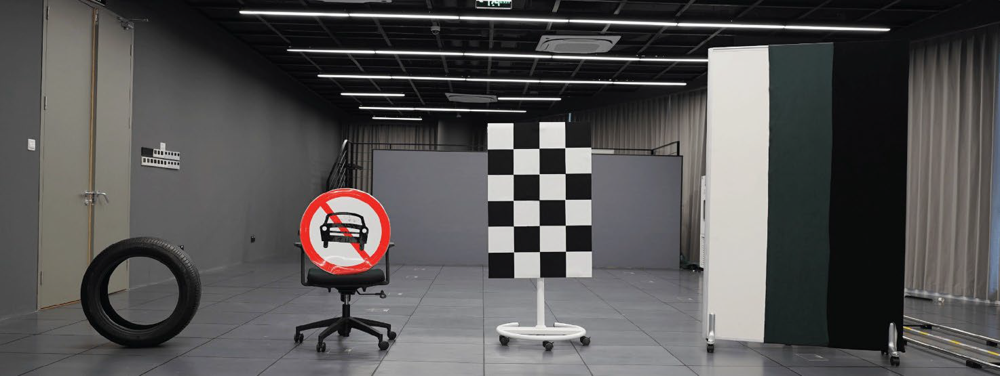
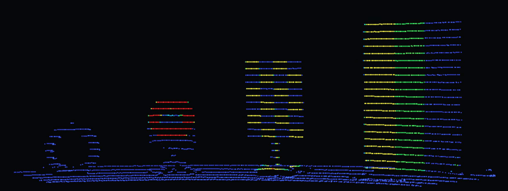
Composants matériels d’un système LiDAR
Les composants matériels principaux d’un système LiDAR incluent un véhicule de collecte (avion, hélicoptère, véhicule et trépied), un système de scanner laser, un système de positionnement par satellite (GPS) et un système de navigation à inertie (INS). Un système INS mesure le roulis, le tangage et la direction du système LiDAR.
Le capteur LiDAR
Le LiDAR est un capteur optique actif qui transmet des faisceaux laser vers une cible tout en parcourant des itinéraires d’étude spécifiques. La réflexion du laser à partir de la cible est détectée et analysée par des récepteurs dans le capteur LiDAR.
Ces récepteurs enregistrent la période précise qui s’écoule entre le moment où l’impulsion laser quitte le système et celui où elle est renvoyée pour calculer la distance entre le capteur et la cible.
Alliées aux informations de positionnement (GPS et INS), ces mesures de distance sont transformées en mesures de points tridimensionnels réels de la cible réflectrice dans l’espace objet.
Post-traitement des données ponctuelles
Les données ponctuelles sont post-traitées après l’étude de la collecte des données LiDAR en coordonnées x, y, z très précises en analysant la plage de temps du laser, l’angle de balayage laser, la position GPS et les informations INS.
Retours LiDAR
Les impulsions laser émises par un système LiDAR se reflètent sur des objets placés à la fois sur la surface du sol et au-dessus : végétation, bâtiments, ponts et ainsi de suite. Une impulsion laser émise peut revenir au capteur LiDAR sous forme d’un ou plusieurs retours. Les impulsions laser émises qui rencontrent plusieurs surfaces de réflexion lors de leur voyage vers le sol sont fractionnées en autant de retours qu’il existe de surfaces réfléchissantes.
Attributs de point LiDAR
Des informations complémentaires sont stockées avec chaque valeur de position x, y et z. Les attributs de point LiDAR suivants sont conservés pour chaque impulsion laser enregistrée : intensité, numéro de retour, nombre de retours, valeurs de classification des points, points situés à la limite de la ligne de vol, valeurs RVB (rouge, vert et bleu), heure GPS, angle de balayage et direction du balayage.
Données de nuages de points
Les données LiDAR spatiales post-traitées sont connues comme des données de nuages de points. Les nuages de points initiaux sont des ensembles volumineux de points d’altitude 3D qui incluent des valeurs x, y et z, ainsi que des attributs supplémentaires, tels que des horodatages GPS. Les entités de surface spécifiques que le laser rencontre sont classées après le post-traitement du nuage de points LiDAR initial. Les altitudes du sol, des bâtiments, du couvert forestier, des ponts au-dessus des autoroutes et de tout ce que le faisceau laser peut rencontrer au cours de l’étude constituent des données de nuages de points.
La rugosité et l’intensité sont deux informations différentes mais complémentaires fournies par les nuages de points LiDAR.
La rugosité mesure la variation locale de l’altitude des points dans un voisinage donné. Elle est calculée à partir des coordonnées 3D (X, Y, Z) des points et reflète la texture et l’irrégularité de la surface. Une rugosité élevée indique la présence d’obstacles ou de variations d’altitude. Cette mesure est indépendante des propriétés de réflectance des matériaux et est utilisée pour distinguer les surfaces planes des surfaces encombrées.
L’intensité, quant à elle, mesure la quantité d’énergie réfléchie par la surface et enregistrée par le capteur LiDAR. C’est une valeur scalaire associée à chaque point, en plus des coordonnées 3D. L’intensité dépend des propriétés de réflectance des matériaux à la longueur d’onde du laser. Elle varie selon le type de surface : elle est forte pour les surfaces réfléchissantes et faible pour les surfaces absorbantes. L’intensité peut aider à distinguer différents matériaux ou objets, mais elle est sensible aux conditions d’acquisition, telles que la distance et l’angle d’incidence.
Fournisseur de données LiDAR
Au niveau mondial, il n’y a pas de données LiDAR disponibles qui couvrent le globe entier. C’est probablement dû à des raisons de coût.
En ce qui concerne la Suisse, Swisstopo [108] met à disposition des données qui couvrent l’intégralité du territoire. Dans la Figure 6.17, on peut voir les 6 campagnes d’acquisition de données qui ont été menées. Les données sont disponibles en moyenne environ 12 mois après le survol.
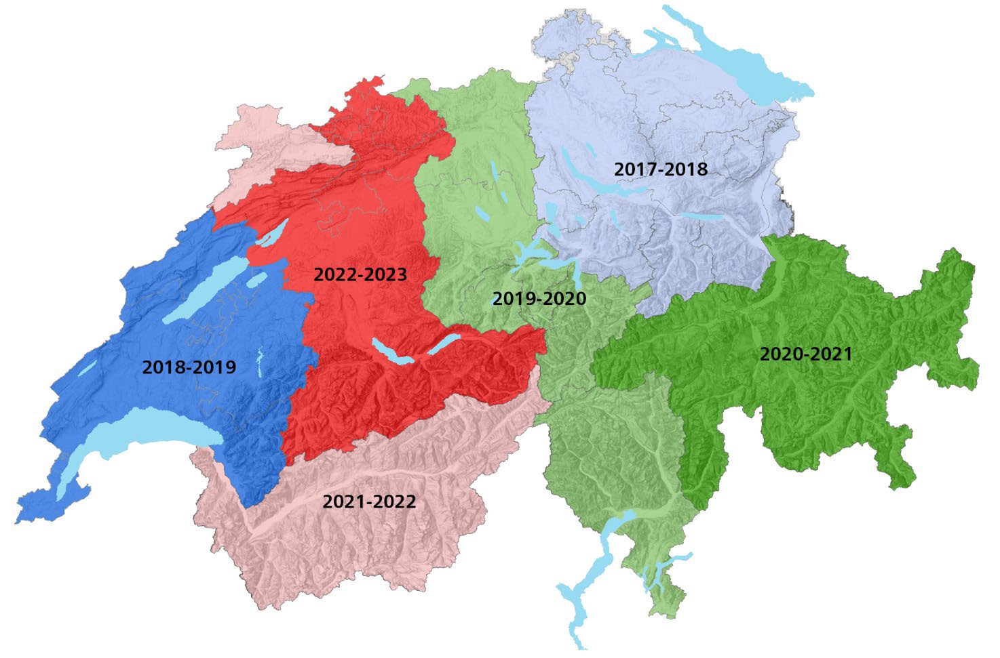
Les caractéristiques des données LiDAR disponibles sont les suivantes :
-
Densité de points : minimum 5 pts/m², moyenne autour de 15-20 pts/m²
-
Classification :
-
Non classifiés
-
Sol
-
Végétation
-
Bâtiments
-
Eau
-
Ponts
-
Précision planimétrique : 20 cm
-
Précision altimétrique : 10 cm
Swisstopo va continuer à mettre à jour ses données dans les années suivantes (Figure 6.18). La prévision est que la mise à jour de ces données sera finalisée en 2030.
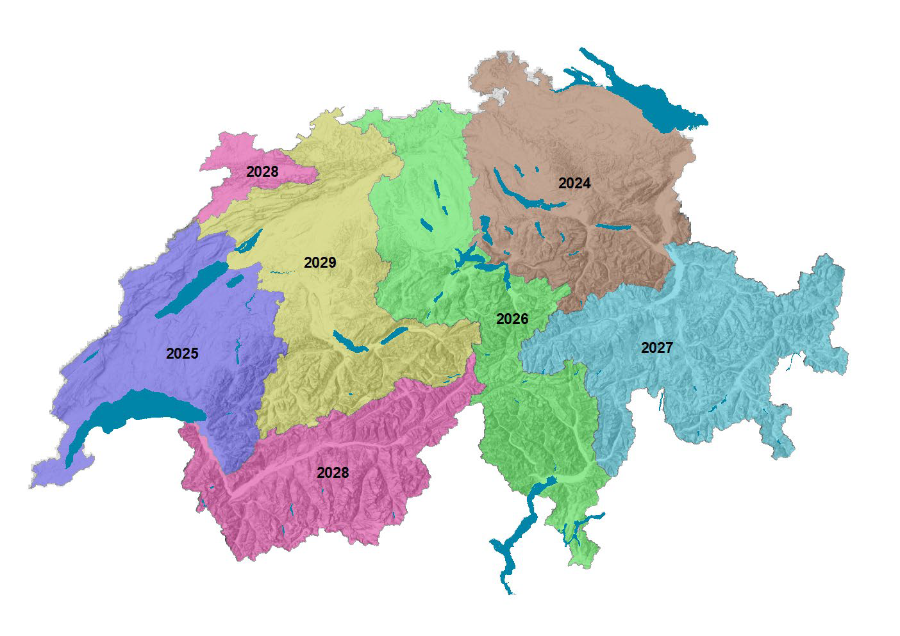
En ce qui concerne le canton de Genève, les dernières données LiDAR [109] [110] disponibles sont:
| 2021 | 2023 | |
|---|---|---|
| Densité de points | 175-220 pts/m² | 100 pts/m² |
| Classification |
|
|
| Précision planimétrique | 8 cm | 20 cm |
| Précision altimétrique | 4 cm | 10 cm |
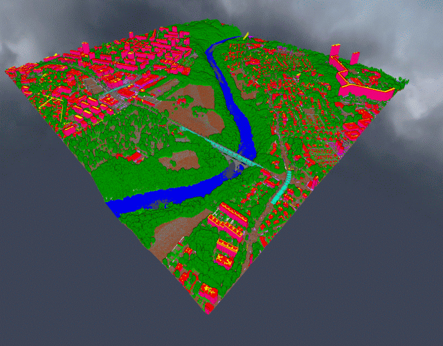
La représentation ci-dessus (Figure 6.19) permet d’avoir une idée à quoi ressemble le nuage de points LiDAR.
Données vectorielles
Les données vectorielles sont un moyen de représenter des informations géométriques à l’aide de valeurs numériques. Contrairement aux données matricielles, qui représentent les informations sous la forme d’une grille de valeurs de pixels, les données vectorielles utilisent des points, des lignes et des polygones pour définir les formes et les limites. Chaque point, ligne ou polygone est représenté par un ensemble de coordonnées (x, y et parfois z) qui définissent son emplacement dans l’espace.
Il existe plusieurs types de données vectorielles :
-
Les points : Représentés par un seul jeu de coordonnées (x, y, z), les points sont souvent utilisés pour représenter des emplacements spécifiques, tels que des adresses ou des points de repère.
-
Les lignes : Représentées par une série de points connectés, les lignes sont souvent utilisées pour représenter des frontières, des routes ou d’autres caractéristiques linéaires.
-
Polygones : Représentés par une série de points connectés qui forment une forme fermée, les polygones sont souvent utilisés pour représenter des zones, telles que des bâtiments, des parcelles ou des limites de zonage.
Les données vectorielles sont largement utilisées en géomatique pour diverses applications, notamment :
-
SIG : Les données vectorielles sont utilisées pour créer, éditer et analyser des données géospatiales dans les logiciels SIG.
-
Analyse spatiale : Les données vectorielles sont utilisées pour effectuer des analyses spatiales, telles que le calcul de distances, de zones tampons et d’intersections.
-
Cartographie : Les données vectorielles sont utilisées pour créer des cartes et visualiser des données géospatiales.
-
L’urbanisme : Les données vectorielles sont utilisées pour planifier et concevoir des infrastructures urbaines, telles que des routes, des bâtiments et des parcs.
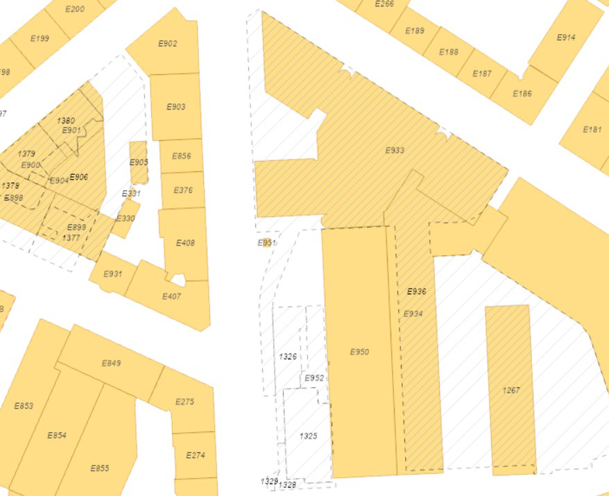
La Figure 6.20 montre un exemple de données vectorielles extraites de SITG, le portail de géodonnées du canton de Genève. En plus des points, lignes et polygones il est possible d’associer des données en forme de tableau (Figure 6.21).
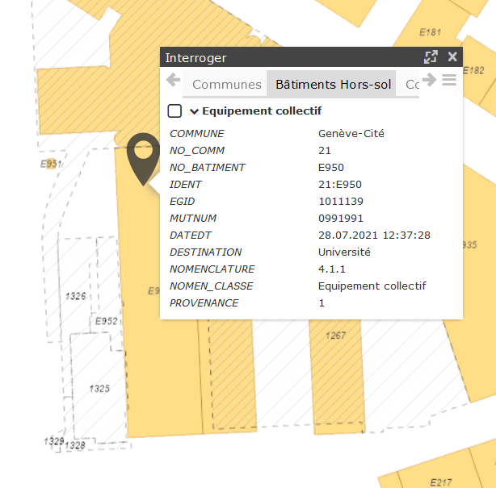
Les données sont organisées en couches vectorielles. Dans ces deux figures d’exemple, la couche des bâtiments hors sol est représentée. Chaque couche regroupe en général une thématique comme les bâtiments, les arbres, etc.
Il existe une très grande quantité de données vectorielles tant au niveau Suisse et genevois.
SITG dispose de plus de 1575 couches de données [105], dont environ 200 couches raster et plus de 1375 couches vectorielles, ce qui représente une très grande quantité de données.
Les données de l’administration publique suisse sont regroupées sur un site web1 pour simplifier l’accès à ces données publiques. Le site compte plus de 10000 couches (vectorielles, raster, etc.) qui sont produites par les communes, cantons, confédération et autres entités publiques. Les thématiques traitées sont très diverses par exemple, l’environnement, l’économie, la santé, etc.
Swisstopo met à disposition du publique un site2 pour visualiser toutes les données disponibles dans une interface conviviale.
Machine learning appliqué aux images
L’analyse d’images est un domaine important du machine learning, qui permet aux machines d’analyser, de comprendre et de déduire des informations à partir d’images. La Figure 6.22 ci-dessous illustre les principales applications.
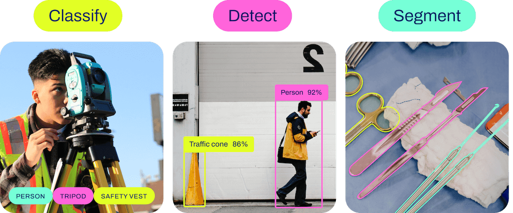
Les principales applications sont :
-
Classification d’images
-
Détection d’objets
-
Segmentation d’images
Il existe d’autres applications tel que le suivi (compter des objets dans une vidéo) et l’estimation de pose (évaluer la position du corps), mais ils ne seront pas traités dans ce rapport car leur application à la géomatique est très limitée.
La Figure 6.23 ci-dessous va permettre d’illustrer les différentes applications.
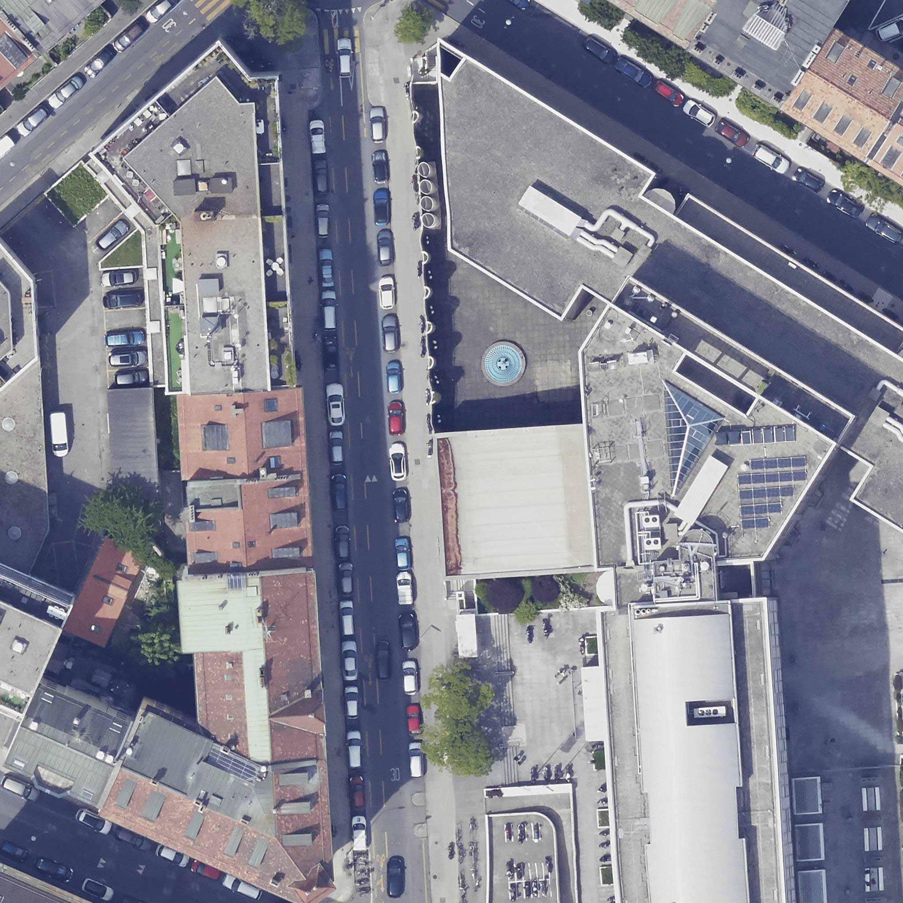
Classification d’images
Cette tâche consiste à classer une image dans l’une des catégories prédéfinies. Par exemple, classer une image en fonction de son contenu (par exemple, chat, chien, voiture, etc.). Les modèles utilisés pour la classification d’images sont généralement entraînés sur des données étiquetées où chaque image est associée à une seule catégorie.
Dans la Figure 6.23 d’exemple, la classification va identifier dans l’image les deux classes soit “rooftop” et “solar-panel”. L’image en soi n’aura pas d’annotation particulière, car la classification identifie ce qu’il y a sur l’image mais pas la position exacte. Le modèle va retourner les classes et la probabilité qu’estime le modèle que la classe soit présente. La classe sélectionnée sera celle qui a la probabilité la plus élevée.
La Figure 6.24 représente un deuxième exemple de classification d’images.
Détection d’objets
La détection va identifier les différentes classes sur l’image, ainsi que leur position. Les modèles utilisés pour la détection d’objets sont généralement entraînés sur des données étiquetées où chaque objet est associé à une boîte englobante et une étiquette de classe.
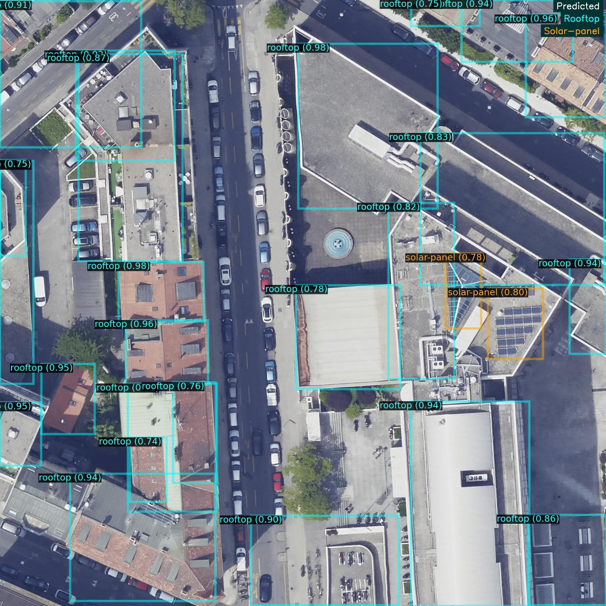
Dans la Figure 6.25 on observe que la détection permet de savoir quelle classe est présente sur l’image, sa position mais pas le contour exact de l’objet. Le chiffre indiqué après la classe indique la probabilité estimée par le modèle que l’objet détecté appartienne à une certaine classe.
Segmentation d’image
Il y a principalement 3 types de segmentation d’image qui sont couramment utilisés :
-
Segmentation sémantique
-
Segmentation instance
-
Segmentation panoptique
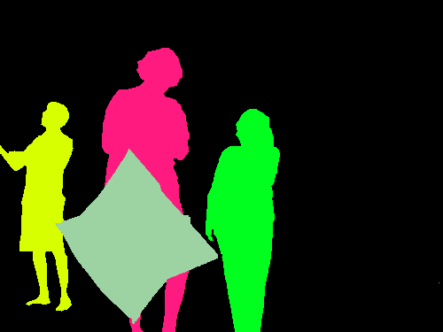
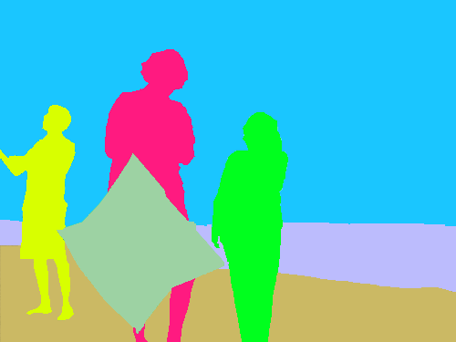
La segmentation sémantique (Figure 6.27) va assigner une classe à chaque pixel de l’image. Ce genre de segmentation est utile pour distinguer par exemple les routes des immeubles, mais ce n’est pas assez sophistiqué pour distinguer les routes entre elles.
La segmentation instance (Figure 6.28) va permettre d’identifier les différents éléments d’une image, mais ne va pas lui assigner une classe.
La segmentation panoptique (Figure 6.29) est la combinaison des segmentations sémantique et instance. C’est la plus sophistiquée car elle permet d’assigner une classe à chaque pixel de l’image et en plus, fait la différence entre les différents objets appartenant à une même classe.
Le Tableau 6.9 ci-dessous résume les différences.
| Segm. sémantique | Segm. instance | Segm. panoptique | |
|---|---|---|---|
| Définition | Chaque pixel est assigné à une classe connue | Détecte les contours des objets, lui assigne un identifiant unique (“objet_1”) à chaque objet. Ne lui attribue pas de classe. | Mélange de segmentation sémantique et instance. Chaque pixel a une classe et il peut différencier entre plusieurs objets de la même classe. |
| Sortie | Contours avec une classe attribuée | Contour par objet segmenté | Contour par objet segmenté avec un label |
| Sépare les objets de la même classe | Non | Oui, mais ne distingue pas les classes | Oui |
Tableau 6.9 — Comparatif des différents types de segmentation d’image
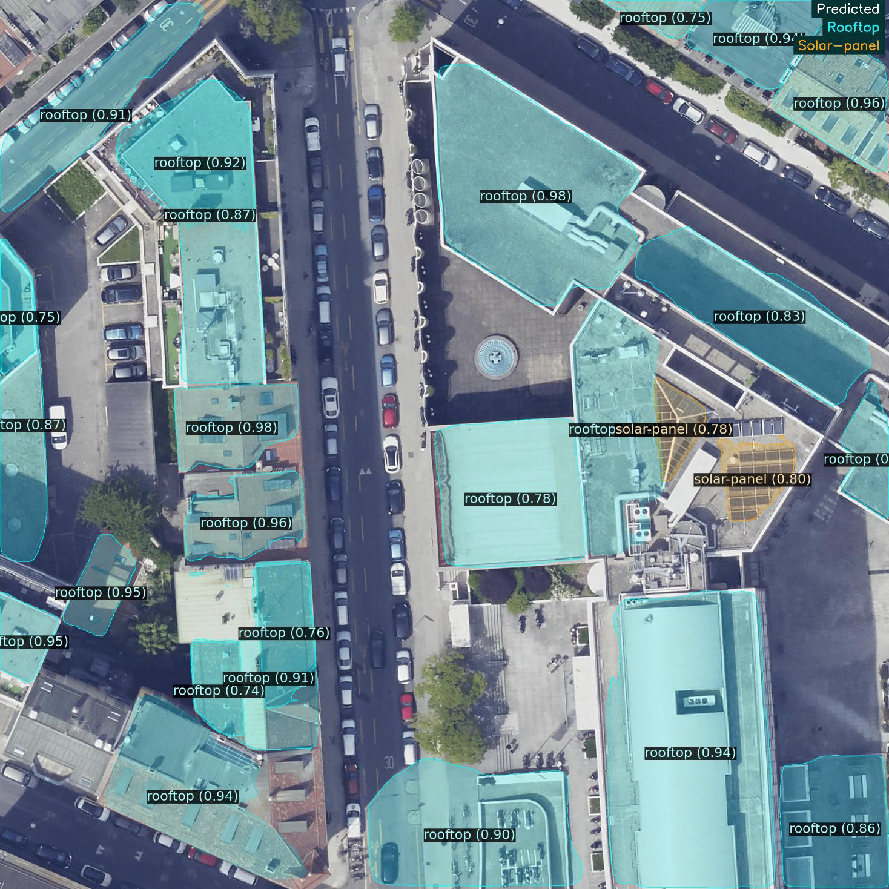
La Figure 6.31 est un exemple de segmentation sémantique, en plus de connaître la classe présente dans l’image, on connaît aussi le contour exact de l’objet. Comme pour la détection, le chiffre indiqué après la classe indique la probabilité estimée par le modèle que l’objet segmenté appartient à une certaine classe. Les chiffres sont identiques dans la Figure 6.25 et la Figure 6.31.
Évaluation des performances
L’évaluation des performances dans le domaine de la vision par ordinateur (« computer vision ») a nécessité de développer des métriques spécifiques :
-
Intersection sur l’union (IoU) et moyenne de l’intersection sur l’union (mIoU)
-
Average precision (AP)
-
Mean average precision (mAP)
-
Pixel accuracy (PA)
Intersection sur l’union (IoU) et moyenne de l’intersection sur l’union (mIoU)
L’intersection sur l’Union (IoU) mesure le chevauchement entre le masque de segmentation prédit et le masque de vérité terrain. Elle est calculée comme la zone d’intersection divisée par la zone d’union entre les deux masques. La Figure 6.32 illustre ce concept. Plus le masque prédit par le modèle est proche de la valeur annotée (vérité terrain), plus le IoU sera élevé. Un IoU élevé indique que le modèle prédit bien.
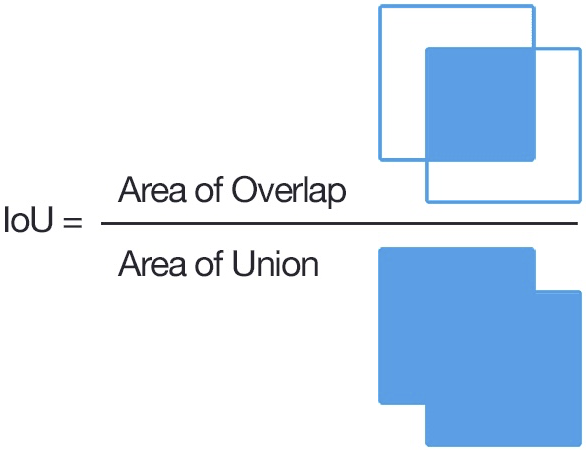
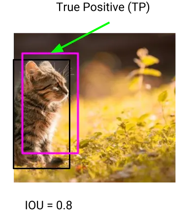
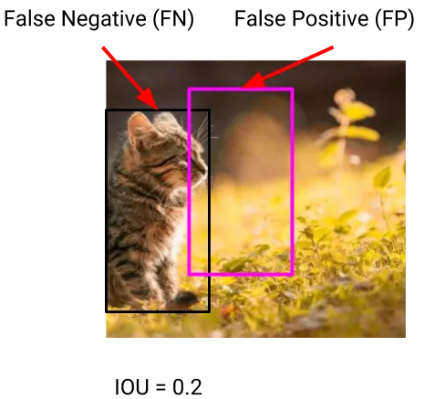
Dans la Figure 6.35, on peut voir deux exemples de IoU. La Figure 6.33 représente un IoU de 0.8, ce qui indique que le modèle a détecté un chat (cadre magenta) proche de la vérité terrain (cadre noir), cette détection devient un true positive (TP).
Dans la Figure 6.34, on observe que le modèle a détecté un chat (cadre magenta) là où il n’y en avait pas, cette détection devient un false positive (FP). Le modèle n’a pas vu le chat (cadre noir), cela comptera comme un false negative (FN).
L’intersection moyenne sur l’union (mIoU) est la moyenne de l’IoU pour toutes les classes.
Average precision (AP)
L’average precision (AP) se base sur le graphique precision-recall (Figure 6.36), ce graphique a dans l’axe des abscisses (x) le recall et dans l’axe des ordonnées (y) la precision. C’est un graphique qui va permettre de visualiser le lien entre la precision et le recall.
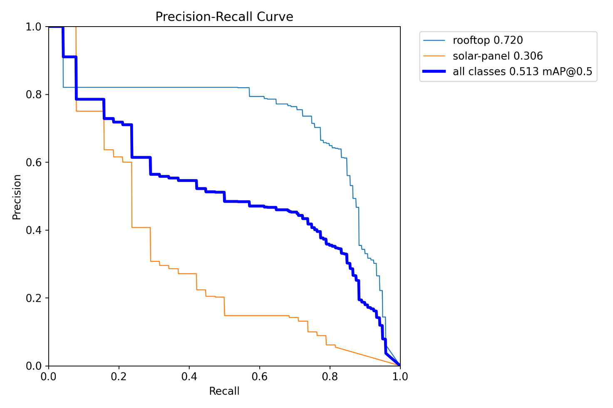
Le choix du seuil de classification permet d’ajuster le compromis entre la precision et le recall. Un seuil bas maximise le recall au détriment de la precision, tandis qu’un seuil élevé maximise la precision au détriment du recall.
La courbe precision-recall visualise ce compromis. Une courbe proche du coin supérieur droit (precision = 1, recall = 1) indique de meilleures performances globales.
L’aire sous la courbe precision-recall, appelée Average Precision (AP), est une métrique résumée pour comparer les modèles.
Les étapes pour calculer l’average precision (AP) sont les suivantes :
-
Prendre les seuils de classification générés par le modèle. Ceux-ci indiquent à quel point le modèle est sûr qu’un pixel appartient bien à une certaine classe. Ce sont des chiffres entre 0 et 1. Plus le chiffre est proche de 1, plus le modèle estime que la probabilité que le pixel appartient à une classe est élevée
-
Calculer la precision et le recall pour les différents seuils de classification
-
Tracer la courbe precision-recall
-
L’average precision s’obtient en calculant l’aire sous la courbe (intégration ou approximation numérique via des trapèzes par exemple)
Mean average precision (mAP)
Dans les cas multi-classes, on calcule la moyenne des AP de l’ensemble des classes et on obtient le mean average precision (mAP). Sur la légende de la Figure 6.36, on peut voir un exemple de calcul de mAP, si l’on prend le AP des deux classes « rooftop » et « solar-panel », la moyenne est égale à 0.513.
Le mAP peut aussi être utilisé avec un seuil minimum de IoU, ce qui va indiquer la capacité du modèle à localiser de manière précise un objet. Les plus communs sont :
-
mAP@0.5 (IoU supérieur ou égal à 0.5)
-
mAP@0.95 (IoU supérieur ou égal à 0.95)
-
mAP@[0.5:0.95] (mAP sur plusieurs seuils de l’IoU entre 0.5 et 0.95)
Pixel accuracy (PA)
Le Pixel Accuracy (PA) mesure le pourcentage de pixels correctement classés sur l’ensemble de l’image.
Panoptic Quality (PQ)
La panoptic quality (PQ) [115] est utilisée dans la segmentation panoptique.
Le PQ permet d’avoir une métrique unique pour la détection du contour des objets (segmentation instance), mais aussi pour assigner une classe aux différents pixels (segmentation sémantique). L’équation se divise en deux parties :
-
Segmentation quality (SQ)
-
Recognition quality (RQ)
La segmentation quality (SQ) [115] évalue la qualité des masques de segmentation produits par un modèle de segmentation panoptique (Équation (8)). Elle est calculée comme la moyenne de l’intersection sur l’union (mIoU) entre les segments prédits et les segments de la vérité de terrain qui ont été mis en correspondance.
(8)
La recognition quality (RQ) [115] évalue l’accuracy des classes attribuées aux régions segmentées par un modèle de segmentation panoptique (Équation (9)). Elle est basée sur le score F1, qui est une moyenne harmonique de la precision et du recall.
(9)
Finalement, la panoptic quality (PQ) [115] (Équation (10)) est la multiplication de SQ (Équation (8)) et RQ (Équation (9))
(10)
Métriques par application
Le Tableau 6.10 ci-dessous met en lien les métriques et les différentes applications.
| Classification | Détection | Segmentation sémantique | Segmentation instance | Segmentation panoptique | |
|---|---|---|---|---|---|
| Principales métriques |
|
|
|
|
|